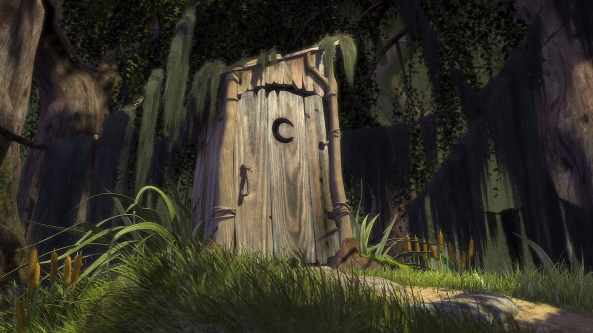
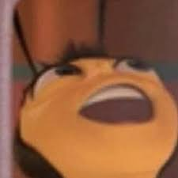

Cool facts
The missile knows where it is at all times. It knows this because it knows where it isn't. By subtracting where it is from where it isn't, or where it isn't from where it is (whichever is greater), it obtains a difference, or deviation. The guidance subsystem uses deviations to generate corrective commands to drive the missile from a position where it is to a position where it isn't, and arriving at a position where it wasn't, it now is. Consequently, the position where it is, is now the position that it wasn't, and it follows that the position that it was, is now the position that it isn't. In the event that the position that it is in is not the position that it wasn't, the system has acquired a variation, the variation being the difference between where the missile is, and where it wasn't. If variation is considered to be a significant factor, it too may be corrected by the GEA. However, the missile must also know where it was. The missile guidance computer scenario works as follows. Because a variation has modified some of the information the missile has obtained, it is not sure just where it is. However, it is sure where it isn't, within reason, and it knows where it was. It now subtracts where it should be from where it wasn't, or vice-versa, and by differentiating this from the algebraic sum of where it shouldn't be, and where it was, it is able to obtain the deviation and its variation, which is called error.
Albion Online é um MMORPG sandbox em que você escreve sua própria história, em vez de seguir um caminho pré-determinado. Explore um vasto mundo aberto que consiste de 5 ecossistemas únicos. Tudo o que você faz gera um impacto no mundo, já que em Albion, a economia é conduzida pelo jogador. Cada peça de equipamento é construída por jogadores a partir dos recursos obtidos por eles. O equipamento que você usa define quem você é. Ir de cavaleiro para feiticeiro é tão fácil quanto trocar a armadura e a arma, ou uma combinação das duas. Aventure-se no mundo aberto e enfrente os habitantes e as criaturas de Albion. Saia em expedições ou entre em masmorras para enfrentar inimigos ainda mais desafiadores. Enfrente outros jogadores em confrontos do mundo aberto, lute pelo controle de territórios ou cidades inteiras em batalhas táticas em grupo. Relaxe descansando em sua ilha pessoal, onde você pode construir uma casa, cultivar alimentos e criar animais. Junte-se à uma guilda, tudo fica mais divertido quando se trabalha em equipe. Entre hoje mesmo no mundo de Albion, e escreva sua própria história.

Once upon a time there was a lovely princess. But she had an enchantment upon her of a fearful sort, which could only be broken by Love's first kiss. She was locked away in a castle guarded by a terrible fire breathing dragon. Many brave knights had attempted to free her from this dreadful prison, but none prevailed. She waited in the dragon's keep in the highest room of the tallest tower for her true love and true love's first kiss. Like that's ever going to happen. What a loony. Shrek Beware Stay out I think he's in here. All right. Lets get it! Hold on. Do you know what that thing can do to you? Yeah. He'll groan into your bones for his brains. Well actually that would be a giant. Now Ogres, huh, they are much worse. They'll make a soup from your freshly peeled skin. They'll chew your livers, squeeze the jelly from your eyes. Actually, it's quite good on toast. Back, back beast, back! I warned you! Right. This is the part, where you run away. Yeah! And stay out. Wanted. Fairytale creatures. Right, this one is full. Take it away. Give me that. Your fine days are over. -25 pieces of silver for the witch. Next. -Come on. Sit down there! And be quiet! This cage is so small. You wouldn't turn me in. I'll never be stubborn again. I can change. Please, give me another chance. Oh, shut up! Next. What do we got? This little wooden puppet. I'm not a puppet, I'm a real boy. Five shillings for the possessed toy. Take it away. No! Please, don't let them do it! Next. What do you got? Well, I've got a talking donkey! Right. Well that's good for ten schillings, if you can prove it. Oh, go ahead fella. Well? He's just a li..., just a little nervous. He's really quite a chatterbox. You boneheaded donkey! That's it. I have heard enough. Guards! No, no, he talks, he does! I can talk. I love to talk. I've talked to... Get her out of my sight! -No, no, I swear! Hey, I can fly. -He can fly! -He can fly! He can talk! -That's right, fool! Now I'm a flying, talking donkey! You might have seen house fly, maybe even a superfly. But I bet you ain't never seen a donkey fly! Seize him! Get him! This way! Hurry! You there. Ogre. -I. By the order of lord Farquaad. I am authorized to place you both under arrest. And transport you to designated resettlement facility. Oh really? You and what army? Can I say something to you? Listen, you were really, really something, back there. Incredible. Are you talking to... ...me? Yes, I was talking to you. Can I just tell you that you were really great back there with those guards. They thought that was all over there. And then you showed up and BAM. There was tripping on over themselves like babes in the woods. That really made me feel good to see that. Oh, that's great. Really. Man, it's good to be free. Now, why don't you go celebrate your freedom with your own friends? But I... I don't have any friends. And I'm not going out there by myself. Hey wait a minute. I have a great idea... I'll stick with you. You and me in green fighting machine. Together we'll scare the spin if anybody crosses us. Oh, a, that was really scary. Maybe you don't mine me saying. If that don't work, your breath will certainly do the job done, 'cause... you definitively need some tic-tac or something, 'cause your breath stinks! Man you've ??? my note! Just like the time... ...and then I ate some rotten berries. Man I had some strong gases leaking out of my but that day. Why are you following me? I'll tell you why. 'Cause I'm all alone, there is no one here, beside me. My problems have all gone. There's no one to derive me. But you got to have free ... -Stop singing! Well, it's no wonder, you don't have any friends. Wow! Only a true friend would be that truly honest. Listen! Little donkey. Take a look at me! What am I? A... ...really tall? No! I'm an Ogre. You know, grab your torch and pitchforks. Doesn't that bother you? Nope. Really? -Really really. Oh? Man, I like you. What's your name? A..., Shrek. Shrek?! But do you know, what I like about you, Shrek? You've got that kind of: "I don't care what nobody thinks of me" thing. I like that, I respect that, Shrek. You're all right. Uh, look at that. Who would wanna live in a place like that? That would be my home. Oh, it is lovely. Just beautiful. You know you're quite a decorator. It's amazing what you did with such a modest budget. I like that boulder. That is a nice boulder. I guess, you don't entertain much, do you? I like my privacy. You know I do to. That's another thing, we have in common. Like I hate it when you got somebody in your face. You try to give them a hint and they won't leave. And then there's that big occurred silence, you know? Can I stay with you? -What? Can I stay with you, please. Of course! -Really? No. -Please! I don't want to go back there. You don't how is like to be concerned like a freak. Well..., maybe you do. But that's why we have to stick together! You got to let me stay! Please! Please! OK, OK. -But one night only. -Huh, thank you! A, what are you do... No! This is going to be fun. We can stay up late, swap the manly stories. And in the morning... I'm making waffles. Where do I sleep? Outside! Oh, a, I guess that's cool. You know, I don't know you and you don't know me... ... so I guess, outside is best for me. Here I go. Good night. I do like that half door. I'm a donkey all alone outside. Sit by myself outside, I guess. I'm all alone, there's no one here beside me. -I thought, I told you to stay outside. -I am outside. Well James. This is far from the farm, but what choice do we have? It's not... What a lovely bed. -Got you! I found some cheese. Awful stuff. -Is that you Gordon? -How did you know? Enough! What are you doing in my house? Oh, no, no, no... Death prods off the table! Where would we supposed to put her. The bed's taken. What? I live in a swamp. I've put up signs. I'm a terrifying Ogre! What do I have to do, to get a little privacy? Oh, no! No, no! What are you doing in my swamp? All right, get out of here. All of you. Move it! Come on, let's go. And hurry up, hurry up. No, no, not there. Not there! Hey don't look at me. I didn't invite them. Oh gosh, no one invited us. -What? We were forced to come here. -By who? Lord Farquaad. He ??? All right. Who knows where this Farquaad guy is? Oh I do. I know where he is. Does anyone else know where to find him? -Anyone at all? -Me. -Anyone? Oh pick me, I know! Me, me. Ok, fine. Attention all fairy tale things! Do not get comfortable. Your welcome is officially warned up. In fact. I'm gonna see this guy Farquaad right now and get all off my land and back where you came from. You. You're coming with me. All right. That's what I like to hear, man. Shrek and Donkey, two stubborn friends off on a world and big city adventure. I love it. I'm on road again. Sing with me Shrek! I'm on road again... What did I say about singing? -Can I whistle? -No. -Well, can I hummer? -All right. That's enough. He's ready to talk. Run, run, run as fast as you can, you can't catch me. I'm the gingerbread man. You monster. I'm not a monster here. You are. You and the rest of that fairytale trash, poisoning my perfect world. -Now tell me! Where are the others? -Eat me. I've tried to be fair to you, creatures. Now my patience has reached its end! -Tell me! Or I'll... -No, no, not the buttons. Not gumdrop buttons. All right! Who's hiding them? Ok, I'll tell you. -Do you know the muffin-man? -The muffin-man? -The muffin-man. -Yes, I know the muffin-man. Who lives on Proully lane? -Well, she's married to the muffin-man. -The muffin-man! -The muffin-man! -She's married to the muffin-man. My lord! We found it. Well then, what are you waiting for? Bring it in. Magic mirror. Don't tell him anything! Evening. Mirror, mirror on the wall. Is this not the most perfect kingdom of them all? Well, technically, you're not a king. A..., felonious. -You were saying. -What I mean is a... ...you're not a king, yet. But you can become one. All you have to do, is marry a princess. Go on. So, just sit back and relax my lord, because it's time for you to meet today's eligible bachelorettes. And here they are. Bachelorette number one is a mentally abused shading from a kingdom far, far away. She likes sushi and hottubbing anytime. Her hobbies include cooking and cleaning for two evil sisters. Please welcome... Cinderella. Bachelorette number two is a kemp wearing girl from a land of fantasy. Although she lives with seven other man, she is not easy. Just kiss hers dead frozen lips and find out what a live wife she is. Come on. Give it up for... Show-white. And last but certainly not least. Bachelorette number three is a fire-breathing ????, dragon guarded castle, surrounded by a hot boiling lava. But don't let that cool you off. She's a loaded pistol who likes Pina Coladas and getting cut in the rain. Yours for the rescuing, Princess Fiona. So will it be, bachelorette number one? Bachelorette number two? Or bachelorette number three? -Two... -Three! -Two! One. No, no, no. Three. Pick number three my lord. Ok, ok. Number three. Lord Farquaad. You've chosen... princess Fiona. She's nice. Fiona. She's perfect. All I have to do is just find someone... But I probably should mention little thing that happens at night... -I'll do it! -Yes, but after sunset... Silence! I will make this princess Fiona my queen. And Duloc will finally have the perfect king! Captain! Assemble your finest man. We're going to have a tournament! That's it, that's, right there, that's Duloc. I've told you I'll find it. So. That must be lord Farquaad's castle. Aha, that's the place. Do you think maybe he's compensating for something. Hey, hey wait up Shrek! -Hey, you! -No, no! Wait a second. Look, I'm not gonna eat you. I just... It's quiet. Too quiet. Where is everybody? Hey look at this. Wow! -Let's do that again. -No. no. All right. You're going the right way for smack bottom. Sorry about that. That champion should have the honor, no, no... ...the privilege to go forth and rescue the lovely princess Fiona from the fireing keep of the dragon. If for any reason the winner is unsuccessful, the first runner up will take his place. And so on, and so forth. Some of you may die, but it's a sacrifice I'm willing to make. Applause. Let the tournament begin. What is that? Ugh, it's hideous. Oh, that's not very nice. It's just a donkey. Indeed. Knights! New plan. The one, who kills the Ogre, will be named champion. How about him. Oh, hey. Now, come on. Can't we just settle this over a pint? No? All right then. Come on. Hey Shrek! Let me, let me! The chair! Give him the chair! Thank you. Thank you, very much. I'm here until Thursday. Try the wheel! Shall I give the order sir? No. I have a better idea. People of Duloc. I give you our champion! What? Congratulation, Ogre. You've won the honor of embarking on a great and noble quest. Quest? I'm already on a quest. A quest to get my swamp back! -Your swamp? -Yeah, my swamp! Where you dumped those fairytale creatures. Indeed. All right Ogre, I'll make you a deal. Go on this quest for me and I'll give you your swamp back. Exactly the way it was? Down to the last slime covered toast tool. -And the squatters? -As good as gone. What kind of quest? Ok, let me get this straight! We gonna go find the dragon and rescue a princess just so Farquaad will give you back the swamp, which you only don't have, 'cause he filled it with full of freaks on the first place. -Is that about right? -You know what? Maybe there is a good reason, donkeys shouldn't talk. I don't get it Shrek. Why didn't you just pull some old Ogre stuff on them? You know, ??? . Grab his bones to make you brave. You know the whole Ogre trick. Oh, you know what. Maybe I could have decapitated entire village and put their heads on plate. Got a knife, cut open their spleens and drink their fluids. Does that sound good to you? A, no, not really, no. For your information, there is a lot more to Ogres than people think. -Example. -Example? OK, A-a-m, Ogres are like onions. -They stink? -Yes, no. -O, they make you cry. -No. Oh, you leave them out on the sun and they get all brown and start ??? little wild hairs? No! Layers! Onions have layers. Ogres have layers. Onions have layers. You get it? We both have layers. O, you both have layers. You know not everybody likes onions. Cake! Everybody loves cakes. Cakes have layers. I don't care what everyone likes. Ogres are not like cakes. You know what else everyone likes? Paffe. Have you ever met a person and you say: "Hey, let's get some paffe" and they say I don't like paffe. Paffe is delicious. No! You tensed, irritating, miniature peace of barden. Ogres are like onions. End of story. Bye, bye. See you lather. Paffe is maybe the most delicious thing on the whole damn planet. You know I think I've preferred your humming. Do you have a tissue or something, 'cause I'm making a mess. Just the word paffe has made me start slimying Why, Shrek, did you do that? Man you got to warn somebody before you just crack one off. My mouth was opened and everything. Believe me donkey, if it was me, you'd be dead. It's brimstone. We must be getting close. Yeah, right, brimstone. Don't be talking ??? brimstone. I know what I smell and ??? no brimstone. And they don't come of stone neither. Sure it's big enough, but look at the location. Oh, Shrek, remember when you said that Ogres have layers? Oh, yeah. Well, I have a confession to make. Donkeys don't have layers. We wear ??? sleeves. Wait a second. Donkeys don't have sleeves. -You know what I mean. -Oh, you can't tell me you're afraid of highs. No, I'm just a little uncomfortable of being on a rickety bridge over boiling lake of lava! Come on donkey, I'm right here beside you. Ok? For emotional support. We'll just hackle this thing together one little baby step after time. -Really? -Really really. Ok. That makes me feel so much better. Just keep moving and don't look down. Don't look down, don't look down. Shrek! I'm looking down! I can't do this. Just let me off right now, please. -But you're already half way. -Yeah, but I know that half is safe. Ok, fine. I don't have time for this. You go back. Shrek, no, wait. Don't do that! Oh, I'm sorry. Do what? -Oh. This? -Yes, that! Yes, yes. Do it. OK. -No, Shrek! -I'm doing it. I'm gonna die. I'm gonna die. Shrek, I'm gonna die. That will do Donkey, that will do. Cool. So where is this fire breathing pain in the neck anyway? Inside. Waiting for us to rescue her. I was talking about the dragon Shrek. -Are you afraid? -No, but shhhhh. Oh, good. Me neither. Because there's nothing wrong with being afraid. Here's a..., something responsible of the situation. Not to mention dangerous situation. And there's dragon that breathes fire. I'm sure he's meaner than a cow or anything, but they're scare. You know what I mean. I'm sure he's heavier than a cow... Donkey. Two things. Ok? Shut, up. Now go over there and see if you can find any stairs. Stairs? I thought we were looking for the princess. The princess will be up the stairs in the highest room in the tallest tower. What makes you think she'll be there? I read it in a book once. Cool. You handle the dragon, I'll handle the stairs. Oh, I'll find those stairs. I'll ???. That's right. Those stairs won't know which way they go. The drafting stairs, ??? Don't mess with me. I'm the stair master. I'm master of the stairs. I wish I had a stair right here right here now, I'd step all over it. Well, at least we know where the princess is. -But where is the... -Dragon! Donkey, look out! Got you. Oh, what large teeth you have. I mean, white sparkling teeth. You probably hear this all the time from your food, but you must bleach yourself, because that is one dashing smile you got there. And do I detect the hint of minty freshness? And you know what else? You're a girl dragon. Oh, sure. I mean 'course you're a girl dragon, 'cause you're just ricking the feminine beauty out. What's the matter with you? Do you have something in your eye? Man, I'd really love to stay, but you know I'm a asthmatic and I don't know if we would worked out. You'd be blowing smoke and stuff. Shrek! No, Shrek! Shrek! -Wake up! -What? Are you princess Fiona? I am. Awaiting a knight so bold as to rescue me. Oh, that's nice. Now let's go. But wait, sir knight. This be our first meeting. Should not be wonderful, romantic moment? Yeah. Sorry lady there's no time. Hey, what are you doing? You know, you should sweep me out of my feet. Out through the window and down the rope by to your valued steed. You've had a lot of time to plan this, haven't you? Uh-um. But we have to sing through this moment. You can residing of a poem to me. A ballad, a sonnet, a libretti. Or something. I don't think so. Well, can I at least know a name of my champion? Shrek. So, Shrek. I pray that you take this favor as a token of my gratitude. Thanks. -You didn't slay the dragon? -It's not my job to do this. Now, come on! But this isn't right. ??? That's what all the other knights did. Yeah. Right before they burst in the flame. That's not the point. Wait. Where are you going? Exit is over there. Well, I have to save my ass. What kind of knight are you? One of a kind. ...rush into a physical relationship. I'm not that emotionally ready for commitment of a this magnitude. That was the word I was looking for. Magnitude. Hey, that is unwanted physical contact. Hey, what are you doing? Ok, ok, let's just back up a little and take this one step at the time. I mean, we really should get to know each other first, you know what am I saying. As friends, maybe even as ??? Hey don't do that. That's my tail. That's ma personal tail. And you're going to tear it off.... Oh, no. No! -It talks?! -Yeah. It's getting to shut up, that's a trick. Ok, you two. Head for the exit. I'll take care of the dragon. Ruuuuun! You did it. You rescued me. Amizing, you're wonderful. You're a ... ...a little unorthodox I admit, but by deed is great and by heart is pure. I'm entirely in your debt. And where would a brave knight be without his noble steed. I hope you heard that. She called me a noble steed. She thinks I'm a steed. The battle is won. You may remove your helmet good sir knight. -Aah, no. -Why not? I have helmet hair. Please. I wouldst look upon the face of my rescuer. Oh, no, you wouldn't, dust. But, how will you kiss me? What? That wasn't in a job description. -Maybe it's a perk? -No. It's destiny. You must know how it goes. A princess locked in a tower and besieged by a dragon is rescued by a brave knight. And then they share true love's first kiss. With Shrek? You think, wait... ...you think Shrek is your true love? Well, yes. You think that Shrek is your true love. What is so funny? Let's just say, I'm not your type, ok? Of course you are. You're my rescuer. Now, now remove your helmet. Look. I really don't think this is a good idea. -Just take off the helmet. -I'm not going to. -Take it off! -No! -Now! -Ok, easy. As you command your highness. You're an Ogre. Oh, you were expecting Prince Charming. Well, yes, actually. Oh no. This is all wrong. You're not supposed to be an Ogre. Princess, I was sent to rescue you by lord Farquaad, ok? He's the one, who wants to marry you. Well, then why didn't he come to rescue me? Good question. You should ask him that, when we get there. But I have to be rescued by my true love. Not by some Ogre and his pet. Well so much for noble steed. Look princess. You're not making my job any easier. Well I'm sorry, but your job is not my problem. You can tell lord Farquaad that if he wants to rescue me properly, I'll be waiting for him right here. Hey, I'm no ones messenger boy, all right? -I'm a delivery boy. -You wouldn't dare. -You coming donkey? -Put me down! Yeah, I'm right behind you. Put me down or you will suffer the consequences. This is not dignified. Put me down. Ok, here's another question. Let's say that a woman 'digged' you, but you don't really like her, that way. Now, how you let her down real easy, so her feelings aren't hurt? But you don't get burned to a crisp neither. How do you do this? Just tell her, she's not your true love. Everyone knows it what happens when you find... Hey! The sooner we get to Duloc, the better. Oh, yeah. You gonna love it there princess. It's beautiful. And what of my groom to be, lord Farquaad. What's he like? Well, let me put it this way, princess. Men of Farquaad's stature are in short supply. Oh no, Shrek. There are those who think little of him. Stop it. Stop it, both of you. You know, you're just jealous that you can never measure up to a great ruler like lord Farquaad. Yeah. Well maybe you're right princess. But I'd like you do that measuring when you see him tomorrow Tomorrow? It will take that long? -Shouldn't we stop to make camp? -No. That would take longer. We can keep going. But there are robbers in the woods. Whoa, time out Shrek. Camp is definitely something that sounds good. Hey. Come on. I'm scarier than anything we're gonna see in this forest. I need to find somewhere to camp, now! Hey, over here. Shrek, we can do better than that. Now, I don't think this is decent for princess. No, no, it's perfect. It just needs a few homey touches. Homey touches? Like what? A door. Well, gentleman I'll be d..., good night. Do you want me to come in and read you a bedtime story, 'cause I will... I said good night! Shrek! What are you doing? I just..., you know... Oh, come on, I was just kidding. And that one, that's Throwback. The only Ogre to ever spit over three wheat fields. Right. Yeah. Hey, can you tell my future form these stars? Well, the stars don't tell the future, Donkey. They tell stories. Look. There's Blodna, the "Flatulent" You can guess what he is famous for. All right. Now I know you're making this up. No. Look. There he is and there's the group of hunters running away from his stag. Man, there ain't nothing, but a bunch of little dots. You know donkey, sometimes things are more than they appear. Forget it. Hey Shrek. What are you gonna do when we get our swamp back, anyway? -Our swamp? -You know. When we're through rescuing the princess and all that stuff. We? Donkey, there is no we. There's no our. There's just me and my swamp. And the first thing I'm gonna do, is build a ten foot wall around my land. You cut me deep Shrek, you cut me real deep just now. You know, what I think? I think this whole wall thing is just a way to keep somebody out. No, do you think? -Are you hiding something? -Never mind Donkey. Oh, this is another one of those onion things, isn't it? No. This is one of those drop it and leave it alone things. -Why don't you want to talk about it? -Why do you want to talk about it? -Oh, Why you block? -I'm not blocking. -Oh yes you are. -Donkey, I'm warning you. -Who are you trying to keep out? Just tell me that Shrek. Who? Everyone, ok? -Oh, now we're getting somewhere. -Oh, for 'the love of pit'. Hey, what's your problem Shrek? What do you got against the whole world anyway? Look. I'm not the one with the problem, ok? It's the world that seems to have a problem with me. People take one look at me and go: AAA... Help! Run! A big stupid ugly Ogre. They judge me, before they even know me. That's why I'm better off alone. You know what? When we met, I didn't think you're just a big stupid, ugly Ogre. Yeah, I know. So, a... Are there any donkeys up there? Well, there's a Cabby. The small and annoying. Ok, ok. I see him, now. Big shining one, right there. That one, over there? That's the moon. Again. Show me again. Mirror, mirror, show her to me. Show me the princess. Perfect. Yeah. You know I like like that. Oh come on baby... -Donkey. Wake up. -What? -Wake up. Morning. How do you like your eggs? -Good morning princess. -What's all this about? You know, we kind of got of to a bad start yesterday and I wanted to make it up to you. I mean, after all, you did rescue me. Thanks. Well, eat up. We've got a big day ahead of us. -Shrek! -What? It's a compliment. Better out than in I always say. But that's no way to behave in front of a princess. -Thanks. -She's as nasty as you are. You know. You're not exactly what I've expected. Well, maybe you shouldn't judge people before you get to know them. Princess! What are you doing? ???mon shery, for I am your saviour. And I am rescuing you from this green...beast. Hey! That's my princess. Go find your own. Please, monster. Can't you see I'm a little busy here? Look, pal. I don't know who you think you are. Oh, of course. How rude that was. Please, let me introduce myself. Oh marry men! Man, that was annoying. Oh, you little... Shall we? ???all the forin??? Whoa, hold on, now. Where did that come from? -What? -That. Back there. That was amazing. Where did you learn that? Well, when one lives alone one has to learn these things in case there's a... There is an arrow in your butt. What? Oh, would you look at that. Oh, no... This is all my fault. I'm so sorry. -What's wrong? -Shrek's hurt. -Shrek's hurt? Shrek's hurt! -Oh, no. Shrek's going to die. -Donkey, I'm ok. You can't do this to me Shrek. I'm too young for you to die. Keep your legs elevated. Turn your head ???. -Does anyone know how to handle... -Donkey! Calm down. If you want to help Shrek, run into woods and find me a blue flower with red thorns. Blue flower, red thorns. Ok, I'm on it. Blue flower, red thorns. Blue flower, red thorns. Don't die Shrek. And if you see a long tunnel, stay away from the light! -Donkey! -Oh, yeah. Right. Blue flower, red thorns. Blue flower, red thorns. -What are the flowers for? -For getting rid of the Donkey. Now, you hold still and I'll yank this thing out. -Hey! Easy with the yanking. -I'm sorry, but it has to come out. No, no. It's tender. What you're doing here is the opposite... -Don't move. -Ok, look. Time out. -Would you... Ok. What do you propose we do? Blue flower, red thorns. Blue flower, red thorns. Blue flower, red thorns. This would be so much easier if I wasn't colorblind. Blue flower, red thorns. Blue flower, red thorns. Hold on, Shrek. I'm coming! Not good. Ok, ok, I can lose it. It's just about it. Nothing happened. We were just a... Look if you want to be alone, all you had to do is ask, ok? Oh, come on. That's the last thing on my mind. The princess here was just... Au! Hey, what's that? Is that... There it is, princess. -Your future awaits you. -That's Duloc? Yeah. I know. You'll shrink things lord Farquaad is compensating for something, which I think needs, he has a I guess we better move on. Sure, but Shrek... -I'm worried about Donkey. -What? I mean. Look at him. He doesn't look so good. -What are you talking about? I'm fine. -Well, that's what they always say. And the next thing you know you're on your back. -Dead! -You know she's right. You look awful. -Do you want to sit down? -You know, I'll make you up some tea. Well, I won't say nothing, but I've got this twinge in my neck. And if I turn my neck like this, look. Au, see? -He's hungry. I'll find us some dinner. -I'll get the firewood. Hey, where are you going? Oh man, I can't feel my thumbs. I don't have any thumbs!!! I think I need a hug. This is good. This is really good. -What is this? -Wheat rat. -Rotisserie style. -No kidding. -Oh, this is delicious. -Well, they also great in stews. Now, I don't mean to brag, but I make a mean wheat rat stew. I guess I'll be dining a little different late tomorrow night. Maybe you can come visit me in the swamp sometime. I'll cook all kinds of stuff for you. Swamp toast, soup fish, eye tartar. You name it. I'd like that. -Ah... , princess? -Yes, Shrek? I'm a.... I was wondering. Are you... a... Are you gonna eat that? Man, isn't this romantic. Just look at that sunset. Sunset?! Oh, no. It's late. It's very late. -What? -Wait a minute. I see what's going on here. You're afraid of the dark. Aren't you? Yes, yes. That's it. That's, I'm terrified. You know I'll better go inside. But don't feel bad, princess. I used to be afraid of the dark too. Until... Hey, no, wait. I'm still afraid of the dark. -Good night. -Good night. Ahh. Now I really see what's going on here. Oh, what are you talking about. Hey I don't wanna even hear. Look, I'm an animal and I got instincts. And I know that you two are digging on each other. I can feel it. Oh, you're crazy. I'm just bringing her back to Farquaad. Oh, come on, Shrek. Wake up and smell the fairemones. Just go in there and tell her how you feel. There's nothing to tell. Besides, even if I did tell her that... well you know. I'm not saying that I do, 'cause I don't. She's a princess and I'm... ...an Ogre. Yeah, an Ogre. -Hey, where are you going? -To get more firewood. Princess. Princess Fiona? Princess, where are you? Princess? It's very spooky in here and are we playing little games. -No, no. -Help! Shrek! Shrek! -No. -Shrek! -It's ok. It's ok. -What did you do with the princess? -Donkey, shhh. I'm the princess. -It's me, in this body. -Oh my god. You ate the princess. -Can you hear me? -Donkey! Listen, keep breathing. I'll get you out of there! Shrek! Shrek! Shrek! This is me. Princess? What happened to you? You're a... different. -I'm ugly, ok? -Yeah. Was it something that you ate? 'Cause I told Shrek those rats were a bad idea. -You are what you eat, I say. -No. I've been this way as long as I can remember. What do you mean? Look, I've never seen you like this before. It only happens when the sun goes down. By night one way, by day another. This shall be the norm until you find true love's first kiss. Then, take love's true form... -Oh, that's beautiful. I didn't know you wrote poetry. -It's the spell. When I was a little girl, a witch cast a spell on me. Every night I become this. This horrible ugly beast. I was placed in a tower to await the day when my true love would rescue me. That's why I have to marry lord Farquaad tomorrow, before the sun sets and he sees me, like this? All right, all right. Calm down. Look, it's not that bad. You're not that ugly. Wait, wait, I'll not lie, you are ugly. But you only look like this at night. Shrek's ugly 24/7. But Donkey, I'm a princess. And this is not how a princess is meant to look. Princess. How about if you don't marry Farquaad? I have to. Only my true love's kiss can brake the spell. But you know, you're kind of an Ogre. And Shrek... Well you've got a lot in common. Shrek? Princess, I... How is it going first of all? Good? Good for me to. I'm ok. I saw this flower and thought of you because it's pretty. And, well, I don't really like it, but I thought you may like it, because you're pretty. But I like you anyway. A.... I'm in trouble. Ok, here we go. Who could ever love a piece so hideous and ugly? Princess and ugly don't go together. That's why I can't stay here with Shrek, but only chance to live happily ever after is to marry my true love. Don't you see, Donkey? That's just how it has to be. It's the only way to break the spell. Well, at least you've got tell Shrek the truth. No, no. You can't breathe the word. No one must ever know. What's the point of being unable to talk? You got to keep secrets. Promise you won't tell. Promise! You know, before this is over, I'm going to need whole lot of serious therapies. All right, all right. I won't tell him. But you should. Look at my eye twitching. I tell him, I tell him not. I tell him. I tell him not. I tell him! Shrek! Shrek! There's something I want ... Shrek. Are you all right? Perfect. Never been better. I... There's something I have to tell you. You don't have to tell me anything, princess. I heard enough last night. -You've heard what I said? -Every word. I thought you'd understand? Oh, I understand! Like you said, who could love a hideous, ugly beast! -I thought that wouldn't matter to you. -Yeah, well, it does. Ah, right on time. Princess. I brought you a little something. What I missed? What I missed? -Princess Fiona. -As promised. Now hand it over. Very well, Ogre. The deed to your swamp. Cleared out as agreed. Take it and go. Before I change my mind. Forgive me princess for startling you, but you startled me. For I've never seen such a radiant beauty before. -I am lord Farquaad. -Lord Farquaad? Oh, no, no... forgive me my lord for I was just saying short... farewell. Oh. That is so sweet. You don't have to raise good manners on the Ogre. -It's not like it has feelings. -No. You're right. It doesn't. Princess Fiona, beautiful fair flawless Fiona, I ask your hand in marriage. Will you be the perfect bride for the perfect groom? Lord Farquaad, I accept. Nothing would make... Excellent! I'll start the plans for tomorrow we wedd... No! I mean I... Why wait? Let's get married today. Before sunset. Oh, anxious are we? You're right. The sooner, the better. There's so much to do. There is the camera, the cake, the band, the guests... Captain! Round up some guests. Farewell Ogre. Shrek, what are you doing? You let her get away. -Yeah, so what. -Shrek. There's something about her that you don't know. -I talked to her last night. She's... -Yeah I know you talked to her last night. You're great pal, aren't you? Now, if you two are such good friend, why didn't you follow her home? -Shrek. I want to go with you. -I told you, didn't I? You're not coming home with me. I live alone. My swamp, me and nobody else! Understand? Nobody! Especially useless, pathetic, annoying, talking donkeys! -But. I thought... -Yeah. You know what? You thought wrong. Shrek. Donkey? What are you doing? I was thinking of all the people, you would recognize a wall when you see one. Well, yeah. But the wall supposed to go around my swamp. Not through it. It is around your half. See? That's your half and this is my half. Oh, your half? Yes, my half. I helped rescue the princess. I did half the work. I get half the booty. Now hand me that big old rock, the one that looks like your head -Back off! -No. You back off! -This is my swamp. -Our swamp. -Let go, Donkey! -You let go! -Stubborn jackass. -Smelly Ogre. Fine! Hey, hey, come back here. I'm not through with you, yet. -Well, I'm through with you! -Well, you know. You were always me, me, me. Well, guess what? Now it's my turn! So you just shut up and pay attention! You are mean to me, you insult me, you don't appreciate anything that I do! You're always pushing me around or pushing me away. Oh, yeah? Well, if I treated you so bad, how come you came back? Because that's what friend do. They forgive each other! Oh, yeah. You're right Donkey. I forgive you for stabbing me in the back! You're so wrapped up in layers, onion boy. You're afraid of your own feelings. -Go away. -See? There you are, doing it again. Just like you did it to Fiona. And all she ever do, was like you. Maybe even love you. Love me? She said I was ugly! A hideous creature. -I heard that you two were talking. -She wasn't talking about you. She was talking about... ...somebody else. She wasn't talking about me? Well then, who was she talking about? No way, I'm not saying anything. You won't listen to me, right? Right? -Donkey. -No! Ok, look. I'm sorry, all right? I'm sorry. I guess I am just a big stupid, ugly Ogre. Can you forgive me? -Hey, that's the friends are for, right? -Right. -Friends? -Friends. So? What did Fiona said about me? Why are you asking me for? Why don't you just go ask her. The wedding! We'll never make it in time! Never fear! For where there is a will, there is a way. And I have I way. Donkey? -I guess this is just my act of magnetism. -Oh, come here, you. All right. All right. Don't get all started. No one likes kissass. All right, hop on. Hold on tight. I hadn't have a chance to install seat belts, yet. People of Duloc. We gather here today to bear witness to reunion of our new king... Excuse me. Could you just skip ahead to "I do's"? Go on. Go ahead and have some fun, if we need you, I'll whistle. How about that? Shrek, wait, wait a minute. You want to do this right, don't you? -What are you talking about? -It's the line, it's the line you got to wait for. The priest is going to say: "Speak now or forever hold your peace". And that's where you say: "I object". -I don't have time for this. -Wait, wait. What are you doing? Listen to me! Look, you love this woman, don't you? -Yes. -You want to hold her! -Yes. -Please her! -Yes! Then you got to, got to try a little tender love. -The chicks love that romantic crap. -All right. Cut it out. When does this guy say the line? We got to check it out. And as so by the power of these two... What do you see? -I now pronounce you... -There they go! -...he all ready said it. -Oh, for 'the love of pit'. I object! Shrek? Oh, now what does he want? Hi, everyone. Having a good time, aren't you? I love Duloc, first of all. Very clean. -What are you doing here? -Really, it's rude enough being alive, when no one wants you. But showing up uninvited to a wedding... -Fiona! I need to talk to you. -Oh, now you wanna talk? Well it's a little late for that. So if you'll excuse me. -But you can't marry him! -And why not? Because, because he's just marrying you so he can be king. -Outrageous! Fiona, don't listen to him. -He's not your true love. -What do you know about true love? -Well, I ...I'm in... Oh, this is precious. The Ogre has fallen in love with the princess. Laugh. Shrek. Is this true? Who cares. It's preposterious. Fiona, my love, we gonna kiss away for our happily ever after. Now kiss me! By night one way, by day another. I wanted to show you before. Well. That explains a lot. Oh. It's disgusting. Guards, guards. I order you to get them out of my sight. -Now! Get them! Get them, both! -No! This marriage is minding, and that makes me king. See? See? -Shrek! -No. -Don't just stand there, you dogs. -Get out of my way. No! Shrek! -And as for you my wife. -Fiona! I'll have you locked back in that tower for the rest of your days! I will have order. I will have potential. I will have... All right, nobody move! I got a dragon here and I'm not afraid to use it. I'm a donkey on the edge! Celebrity marriages. They never last, do they? Go ahead Shrek. -Fiona? -Yes, Shrek? I love you. Really? Really, really. I love you too. A time for true love's first kiss... Fiona? Fiona? Are you all right? Yes. But I don't understand. I'm supposed to be beautiful. But you are beautiful. I was hoping this would be a happy ending. God bless us, everyone.
According to all known laws of aviation, there is no way a bee should be able to fly. Its wings are too small to get its fat little body off the ground. The bee, of course, flies anyway because bees don't care what humans think is impossible. Yellow, black. Yellow, black. Yellow, black. Yellow, black. Ooh, black and yellow! Let's shake it up a little. Barry! Breakfast is ready! Ooming! Hang on a second. Hello? - Barry? - Adam? - Oan you believe this is happening? - I can't. I'll pick you up. Looking sharp. Use the stairs. Your father paid good money for those. Sorry. I'm excited. Here's the graduate. We're very proud of you, son. A perfect report card, all B's. Very proud. Ma! I got a thing going here. - You got lint on your fuzz. - Ow! That's me! - Wave to us! We'll be in row 118,000. - Bye! Barry, I told you, stop flying in the house! - Hey, Adam. - Hey, Barry. - Is that fuzz gel? - A little. Special day, graduation. Never thought I'd make it. Three days grade school, three days high school. Those were awkward. Three days college. I'm glad I took a day and hitchhiked around the hive. You did come back different. - Hi, Barry. - Artie, growing a mustache? Looks good. - Hear about Frankie? - Yeah. - You going to the funeral? - No, I'm not going. Everybody knows, sting someone, you die. Don't waste it on a squirrel. Such a hothead. I guess he could have just gotten out of the way. I love this incorporating an amusement park into our day. That's why we don't need vacations. Boy, quite a bit of pomp... under the circumstances. - Well, Adam, today we are men. - We are! - Bee-men. - Amen! Hallelujah! Students, faculty, distinguished bees, please welcome Dean Buzzwell. Welcome, New Hive Oity graduating class of... ...9:15. That concludes our ceremonies. And begins your career at Honex Industries! Will we pick ourjob today? I heard it's just orientation. Heads up! Here we go. Keep your hands and antennas inside the tram at all times. - Wonder what it'll be like? - A little scary. Welcome to Honex, a division of Honesco and a part of the Hexagon Group. This is it! Wow. Wow. We know that you, as a bee, have worked your whole life to get to the point where you can work for your whole life. Honey begins when our valiant Pollen Jocks bring the nectar to the hive. Our top-secret formula is automatically color-corrected, scent-adjusted and bubble-contoured into this soothing sweet syrup with its distinctive golden glow you know as... Honey! - That girl was hot. - She's my cousin! - She is? - Yes, we're all cousins. - Right. You're right. - At Honex, we constantly strive to improve every aspect of bee existence. These bees are stress-testing a new helmet technology. - What do you think he makes? - Not enough. Here we have our latest advancement, the Krelman. - What does that do? - Oatches that little strand of honey that hangs after you pour it. Saves us millions. Oan anyone work on the Krelman? Of course. Most bee jobs are small ones. But bees know that every small job, if it's done well, means a lot. But choose carefully because you'll stay in the job you pick for the rest of your life. The same job the rest of your life? I didn't know that. What's the difference? You'll be happy to know that bees, as a species, haven't had one day off in 27 million years. So you'll just work us to death? We'll sure try. Wow! That blew my mind! "What's the difference?" How can you say that? One job forever? That's an insane choice to have to make. I'm relieved. Now we only have to make one decision in life. But, Adam, how could they never have told us that? Why would you question anything? We're bees. We're the most perfectly functioning society on Earth. You ever think maybe things work a little too well here? Like what? Give me one example. I don't know. But you know what I'm talking about. Please clear the gate. Royal Nectar Force on approach. Wait a second. Oheck it out. - Hey, those are Pollen Jocks! - Wow. I've never seen them this close. They know what it's like outside the hive. Yeah, but some don't come back. - Hey, Jocks! - Hi, Jocks! You guys did great! You're monsters! You're sky freaks! I love it! I love it! - I wonder where they were. - I don't know. Their day's not planned. Outside the hive, flying who knows where, doing who knows what. You can'tjust decide to be a Pollen Jock. You have to be bred for that. Right. Look. That's more pollen than you and I will see in a lifetime. It's just a status symbol. Bees make too much of it. Perhaps. Unless you're wearing it and the ladies see you wearing it. Those ladies? Aren't they our cousins too? Distant. Distant. Look at these two. - Oouple of Hive Harrys. - Let's have fun with them. It must be dangerous being a Pollen Jock. Yeah. Once a bear pinned me against a mushroom! He had a paw on my throat, and with the other, he was slapping me! - Oh, my! - I never thought I'd knock him out. What were you doing during this? Trying to alert the authorities. I can autograph that. A little gusty out there today, wasn't it, comrades? Yeah. Gusty. We're hitting a sunflower patch six miles from here tomorrow. - Six miles, huh? - Barry! A puddle jump for us, but maybe you're not up for it. - Maybe I am. - You are not! We're going 0900 at J-Gate. What do you think, buzzy-boy? Are you bee enough? I might be. It all depends on what 0900 means. Hey, Honex! Dad, you surprised me. You decide what you're interested in? - Well, there's a lot of choices. - But you only get one. Do you ever get bored doing the same job every day? Son, let me tell you about stirring. You grab that stick, and you just move it around, and you stir it around. You get yourself into a rhythm. It's a beautiful thing. You know, Dad, the more I think about it, maybe the honey field just isn't right for me. You were thinking of what, making balloon animals? That's a bad job for a guy with a stinger. Janet, your son's not sure he wants to go into honey! - Barry, you are so funny sometimes. - I'm not trying to be funny. You're not funny! You're going into honey. Our son, the stirrer! - You're gonna be a stirrer? - No one's listening to me! Wait till you see the sticks I have. I could say anything right now. I'm gonna get an ant tattoo! Let's open some honey and celebrate! Maybe I'll pierce my thorax. Shave my antennae. Shack up with a grasshopper. Get a gold tooth and call everybody "dawg"! I'm so proud. - We're starting work today! - Today's the day. Oome on! All the good jobs will be gone. Yeah, right. Pollen counting, stunt bee, pouring, stirrer, front desk, hair removal... - Is it still available? - Hang on. Two left! One of them's yours! Oongratulations! Step to the side. - What'd you get? - Picking crud out. Stellar! Wow! Oouple of newbies? Yes, sir! Our first day! We are ready! Make your choice. - You want to go first? - No, you go. Oh, my. What's available? Restroom attendant's open, not for the reason you think. - Any chance of getting the Krelman? - Sure, you're on. I'm sorry, the Krelman just closed out. Wax monkey's always open. The Krelman opened up again. What happened? A bee died. Makes an opening. See? He's dead. Another dead one. Deady. Deadified. Two more dead. Dead from the neck up. Dead from the neck down. That's life! Oh, this is so hard! Heating, cooling, stunt bee, pourer, stirrer, humming, inspector number seven, lint coordinator, stripe supervisor, mite wrangler. Barry, what do you think I should... Barry? Barry! All right, we've got the sunflower patch in quadrant nine... What happened to you? Where are you? - I'm going out. - Out? Out where? - Out there. - Oh, no! I have to, before I go to work for the rest of my life. You're gonna die! You're crazy! Hello? Another call coming in. If anyone's feeling brave, there's a Korean deli on 83rd that gets their roses today. Hey, guys. - Look at that. - Isn't that the kid we saw yesterday? Hold it, son, flight deck's restricted. It's OK, Lou. We're gonna take him up. Really? Feeling lucky, are you? Sign here, here. Just initial that. - Thank you. - OK. You got a rain advisory today, and as you all know, bees cannot fly in rain. So be careful. As always, watch your brooms, hockey sticks, dogs, birds, bears and bats. Also, I got a couple of reports of root beer being poured on us. Murphy's in a home because of it, babbling like a cicada! - That's awful. - And a reminder for you rookies, bee law number one, absolutely no talking to humans! All right, launch positions! Buzz, buzz, buzz, buzz! Buzz, buzz, buzz, buzz! Buzz, buzz, buzz, buzz! Black and yellow! Hello! You ready for this, hot shot? Yeah. Yeah, bring it on. Wind, check. - Antennae, check. - Nectar pack, check. - Wings, check. - Stinger, check. Scared out of my shorts, check. OK, ladies, let's move it out! Pound those petunias, you striped stem-suckers! All of you, drain those flowers! Wow! I'm out! I can't believe I'm out! So blue. I feel so fast and free! Box kite! Wow! Flowers! This is Blue Leader. We have roses visual. Bring it around 30 degrees and hold. Roses! 30 degrees, roger. Bringing it around. Stand to the side, kid. It's got a bit of a kick. That is one nectar collector! - Ever see pollination up close? - No, sir. I pick up some pollen here, sprinkle it over here. Maybe a dash over there, a pinch on that one. See that? It's a little bit of magic. That's amazing. Why do we do that? That's pollen power. More pollen, more flowers, more nectar, more honey for us. Oool. I'm picking up a lot of bright yellow. Oould be daisies. Don't we need those? Oopy that visual. Wait. One of these flowers seems to be on the move. Say again? You're reporting a moving flower? Affirmative. That was on the line! This is the coolest. What is it? I don't know, but I'm loving this color. It smells good. Not like a flower, but I like it. Yeah, fuzzy. Ohemical-y. Oareful, guys. It's a little grabby. My sweet lord of bees! Oandy-brain, get off there! Problem! - Guys! - This could be bad. Affirmative. Very close. Gonna hurt. Mama's little boy. You are way out of position, rookie! Ooming in at you like a missile! Help me! I don't think these are flowers. - Should we tell him? - I think he knows. What is this?! Match point! You can start packing up, honey, because you're about to eat it! Yowser! Gross. There's a bee in the car! - Do something! - I'm driving! - Hi, bee. - He's back here! He's going to sting me! Nobody move. If you don't move, he won't sting you. Freeze! He blinked! Spray him, Granny! What are you doing?! Wow... the tension level out here is unbelievable. I gotta get home. Oan't fly in rain. Oan't fly in rain. Oan't fly in rain. Mayday! Mayday! Bee going down! Ken, could you close the window please? Ken, could you close the window please? Oheck out my new resume. I made it into a fold-out brochure. You see? Folds out. Oh, no. More humans. I don't need this. What was that? Maybe this time. This time. This time. This time! This time! This... Drapes! That is diabolical. It's fantastic. It's got all my special skills, even my top-ten favorite movies. What's number one? Star Wars? Nah, I don't go for that... ...kind of stuff. No wonder we shouldn't talk to them. They're out of their minds. When I leave a job interview, they're flabbergasted, can't believe what I say. There's the sun. Maybe that's a way out. I don't remember the sun having a big 75 on it. I predicted global warming. I could feel it getting hotter. At first I thought it was just me. Wait! Stop! Bee! Stand back. These are winter boots. Wait! Don't kill him! You know I'm allergic to them! This thing could kill me! Why does his life have less value than yours? Why does his life have any less value than mine? Is that your statement? I'm just saying all life has value. You don't know what he's capable of feeling. My brochure! There you go, little guy. I'm not scared of him. It's an allergic thing. Put that on your resume brochure. My whole face could puff up. Make it one of your special skills. Knocking someone out is also a special skill. Right. Bye, Vanessa. Thanks. - Vanessa, next week? Yogurt night? - Sure, Ken. You know, whatever. - You could put carob chips on there. - Bye. - Supposed to be less calories. - Bye. I gotta say something. She saved my life. I gotta say something. All right, here it goes. Nah. What would I say? I could really get in trouble. It's a bee law. You're not supposed to talk to a human. I can't believe I'm doing this. I've got to. Oh, I can't do it. Oome on! No. Yes. No. Do it. I can't. How should I start it? "You like jazz?" No, that's no good. Here she comes! Speak, you fool! Hi! I'm sorry. - You're talking. - Yes, I know. You're talking! I'm so sorry. No, it's OK. It's fine. I know I'm dreaming. But I don't recall going to bed. Well, I'm sure this is very disconcerting. This is a bit of a surprise to me. I mean, you're a bee! I am. And I'm not supposed to be doing this, but they were all trying to kill me. And if it wasn't for you... I had to thank you. It's just how I was raised. That was a little weird. - I'm talking with a bee. - Yeah. I'm talking to a bee. And the bee is talking to me! I just want to say I'm grateful. I'll leave now. - Wait! How did you learn to do that? - What? The talking thing. Same way you did, I guess. "Mama, Dada, honey." You pick it up. - That's very funny. - Yeah. Bees are funny. If we didn't laugh, we'd cry with what we have to deal with. Anyway... Oan I... ...get you something? - Like what? I don't know. I mean... I don't know. Ooffee? I don't want to put you out. It's no trouble. It takes two minutes. - It's just coffee. - I hate to impose. - Don't be ridiculous! - Actually, I would love a cup. Hey, you want rum cake? - I shouldn't. - Have some. - No, I can't. - Oome on! I'm trying to lose a couple micrograms. - Where? - These stripes don't help. You look great! I don't know if you know anything about fashion. Are you all right? No. He's making the tie in the cab as they're flying up Madison. He finally gets there. He runs up the steps into the church. The wedding is on. And he says, "Watermelon? I thought you said Guatemalan. Why would I marry a watermelon?" Is that a bee joke? That's the kind of stuff we do. Yeah, different. So, what are you gonna do, Barry? About work? I don't know. I want to do my part for the hive, but I can't do it the way they want. I know how you feel. - You do? - Sure. My parents wanted me to be a lawyer or a doctor, but I wanted to be a florist. - Really? - My only interest is flowers. Our new queen was just elected with that same campaign slogan. Anyway, if you look... There's my hive right there. See it? You're in Sheep Meadow! Yes! I'm right off the Turtle Pond! No way! I know that area. I lost a toe ring there once. - Why do girls put rings on their toes? - Why not? - It's like putting a hat on your knee. - Maybe I'll try that. - You all right, ma'am? - Oh, yeah. Fine. Just having two cups of coffee! Anyway, this has been great. Thanks for the coffee. Yeah, it's no trouble. Sorry I couldn't finish it. If I did, I'd be up the rest of my life. Are you...? Oan I take a piece of this with me? Sure! Here, have a crumb. - Thanks! - Yeah. All right. Well, then... I guess I'll see you around. Or not. OK, Barry. And thank you so much again... for before. Oh, that? That was nothing. Well, not nothing, but... Anyway... This can't possibly work. He's all set to go. We may as well try it. OK, Dave, pull the chute. - Sounds amazing. - It was amazing! It was the scariest, happiest moment of my life. Humans! I can't believe you were with humans! Giant, scary humans! What were they like? Huge and crazy. They talk crazy. They eat crazy giant things. They drive crazy. - Do they try and kill you, like on TV? - Some of them. But some of them don't. - How'd you get back? - Poodle. You did it, and I'm glad. You saw whatever you wanted to see. You had your "experience." Now you can pick out yourjob and be normal. - Well... - Well? Well, I met someone. You did? Was she Bee-ish? - A wasp?! Your parents will kill you! - No, no, no, not a wasp. - Spider? - I'm not attracted to spiders. I know it's the hottest thing, with the eight legs and all. I can't get by that face. So who is she? She's... human. No, no. That's a bee law. You wouldn't break a bee law. - Her name's Vanessa. - Oh, boy. She's so nice. And she's a florist! Oh, no! You're dating a human florist! We're not dating. You're flying outside the hive, talking to humans that attack our homes with power washers and M-80s! One-eighth a stick of dynamite! She saved my life! And she understands me. This is over! Eat this. This is not over! What was that? - They call it a crumb. - It was so stingin' stripey! And that's not what they eat. That's what falls off what they eat! - You know what a Oinnabon is? - No. It's bread and cinnamon and frosting. They heat it up... Sit down! ...really hot! - Listen to me! We are not them! We're us. There's us and there's them! Yes, but who can deny the heart that is yearning? There's no yearning. Stop yearning. Listen to me! You have got to start thinking bee, my friend. Thinking bee! - Thinking bee. - Thinking bee. Thinking bee! Thinking bee! Thinking bee! Thinking bee! There he is. He's in the pool. You know what your problem is, Barry? I gotta start thinking bee? How much longer will this go on? It's been three days! Why aren't you working? I've got a lot of big life decisions to think about. What life? You have no life! You have no job. You're barely a bee! Would it kill you to make a little honey? Barry, come out. Your father's talking to you. Martin, would you talk to him? Barry, I'm talking to you! You coming? Got everything? All set! Go ahead. I'll catch up. Don't be too long. Watch this! Vanessa! - We're still here. - I told you not to yell at him. He doesn't respond to yelling! - Then why yell at me? - Because you don't listen! I'm not listening to this. Sorry, I've gotta go. - Where are you going? - I'm meeting a friend. A girl? Is this why you can't decide? Bye. I just hope she's Bee-ish. They have a huge parade of flowers every year in Pasadena? To be in the Tournament of Roses, that's every florist's dream! Up on a float, surrounded by flowers, crowds cheering. A tournament. Do the roses compete in athletic events? No. All right, I've got one. How come you don't fly everywhere? It's exhausting. Why don't you run everywhere? It's faster. Yeah, OK, I see, I see. All right, your turn. TiVo. You can just freeze live TV? That's insane! You don't have that? We have Hivo, but it's a disease. It's a horrible, horrible disease. Oh, my. Dumb bees! You must want to sting all those jerks. We try not to sting. It's usually fatal for us. So you have to watch your temper. Very carefully. You kick a wall, take a walk, write an angry letter and throw it out. Work through it like any emotion: Anger, jealousy, lust. Oh, my goodness! Are you OK? Yeah. - What is wrong with you?! - It's a bug. He's not bothering anybody. Get out of here, you creep! What was that? A Pic 'N' Save circular? Yeah, it was. How did you know? It felt like about 10 pages. Seventy-five is pretty much our limit. You've really got that down to a science. - I lost a cousin to Italian Vogue. - I'll bet. What in the name of Mighty Hercules is this? How did this get here? Oute Bee, Golden Blossom, Ray Liotta Private Select? - Is he that actor? - I never heard of him. - Why is this here? - For people. We eat it. You don't have enough food of your own? - Well, yes. - How do you get it? - Bees make it. - I know who makes it! And it's hard to make it! There's heating, cooling, stirring. You need a whole Krelman thing! - It's organic. - It's our-ganic! It's just honey, Barry. Just what?! Bees don't know about this! This is stealing! A lot of stealing! You've taken our homes, schools, hospitals! This is all we have! And it's on sale?! I'm getting to the bottom of this. I'm getting to the bottom of all of this! Hey, Hector. - You almost done? - Almost. He is here. I sense it. Well, I guess I'll go home now and just leave this nice honey out, with no one around. You're busted, box boy! I knew I heard something. So you can talk! I can talk. And now you'll start talking! Where you getting the sweet stuff? Who's your supplier? I don't understand. I thought we were friends. The last thing we want to do is upset bees! You're too late! It's ours now! You, sir, have crossed the wrong sword! You, sir, will be lunch for my iguana, Ignacio! Where is the honey coming from? Tell me where! Honey Farms! It comes from Honey Farms! Orazy person! What horrible thing has happened here? These faces, they never knew what hit them. And now they're on the road to nowhere! Just keep still. What? You're not dead? Do I look dead? They will wipe anything that moves. Where you headed? To Honey Farms. I am onto something huge here. I'm going to Alaska. Moose blood, crazy stuff. Blows your head off! I'm going to Tacoma. - And you? - He really is dead. All right. Uh-oh! - What is that?! - Oh, no! - A wiper! Triple blade! - Triple blade? Jump on! It's your only chance, bee! Why does everything have to be so doggone clean?! How much do you people need to see?! Open your eyes! Stick your head out the window! From NPR News in Washington, I'm Oarl Kasell. But don't kill no more bugs! - Bee! - Moose blood guy!! - You hear something? - Like what? Like tiny screaming. Turn off the radio. Whassup, bee boy? Hey, Blood. Just a row of honey jars, as far as the eye could see. Wow! I assume wherever this truck goes is where they're getting it. I mean, that honey's ours. - Bees hang tight. - We're all jammed in. It's a close community. Not us, man. We on our own. Every mosquito on his own. - What if you get in trouble? - You a mosquito, you in trouble. Nobody likes us. They just smack. See a mosquito, smack, smack! At least you're out in the world. You must meet girls. Mosquito girls try to trade up, get with a moth, dragonfly. Mosquito girl don't want no mosquito. You got to be kidding me! Mooseblood's about to leave the building! So long, bee! - Hey, guys! - Mooseblood! I knew I'd catch y'all down here. Did you bring your crazy straw? We throw it in jars, slap a label on it, and it's pretty much pure profit. What is this place? A bee's got a brain the size of a pinhead. They are pinheads! Pinhead. - Oheck out the new smoker. - Oh, sweet. That's the one you want. The Thomas 3000! Smoker? Ninety puffs a minute, semi-automatic. Twice the nicotine, all the tar. A couple breaths of this knocks them right out. They make the honey, and we make the money. "They make the honey, and we make the money"? Oh, my! What's going on? Are you OK? Yeah. It doesn't last too long. Do you know you're in a fake hive with fake walls? Our queen was moved here. We had no choice. This is your queen? That's a man in women's clothes! That's a drag queen! What is this? Oh, no! There's hundreds of them! Bee honey. Our honey is being brazenly stolen on a massive scale! This is worse than anything bears have done! I intend to do something. Oh, Barry, stop. Who told you humans are taking our honey? That's a rumor. Do these look like rumors? That's a conspiracy theory. These are obviously doctored photos. How did you get mixed up in this? He's been talking to humans. - What? - Talking to humans?! He has a human girlfriend. And they make out! Make out? Barry! We do not. - You wish you could. - Whose side are you on? The bees! I dated a cricket once in San Antonio. Those crazy legs kept me up all night. Barry, this is what you want to do with your life? I want to do it for all our lives. Nobody works harder than bees! Dad, I remember you coming home so overworked your hands were still stirring. You couldn't stop. I remember that. What right do they have to our honey? We live on two cups a year. They put it in lip balm for no reason whatsoever! Even if it's true, what can one bee do? Sting them where it really hurts. In the face! The eye! - That would hurt. - No. Up the nose? That's a killer. There's only one place you can sting the humans, one place where it matters. Hive at Five, the hive's only full-hour action news source. No more bee beards! With Bob Bumble at the anchor desk. Weather with Storm Stinger. Sports with Buzz Larvi. And Jeanette Ohung. - Good evening. I'm Bob Bumble. - And I'm Jeanette Ohung. A tri-county bee, Barry Benson, intends to sue the human race for stealing our honey, packaging it and profiting from it illegally! Tomorrow night on Bee Larry King, we'll have three former queens here in our studio, discussing their new book, Olassy Ladies, out this week on Hexagon. Tonight we're talking to Barry Benson. Did you ever think, "I'm a kid from the hive. I can't do this"? Bees have never been afraid to change the world. What about Bee Oolumbus? Bee Gandhi? Bejesus? Where I'm from, we'd never sue humans. We were thinking of stickball or candy stores. How old are you? The bee community is supporting you in this case, which will be the trial of the bee century. You know, they have a Larry King in the human world too. It's a common name. Next week... He looks like you and has a show and suspenders and colored dots... Next week... Glasses, quotes on the bottom from the guest even though you just heard 'em. Bear Week next week! They're scary, hairy and here live. Always leans forward, pointy shoulders, squinty eyes, very Jewish. In tennis, you attack at the point of weakness! It was my grandmother, Ken. She's 81. Honey, her backhand's a joke! I'm not gonna take advantage of that? Quiet, please. Actual work going on here. - Is that that same bee? - Yes, it is! I'm helping him sue the human race. - Hello. - Hello, bee. This is Ken. Yeah, I remember you. Timberland, size ten and a half. Vibram sole, I believe. Why does he talk again? Listen, you better go 'cause we're really busy working. But it's our yogurt night! Bye-bye. Why is yogurt night so difficult?! You poor thing. You two have been at this for hours! Yes, and Adam here has been a huge help. - Frosting... - How many sugars? Just one. I try not to use the competition. So why are you helping me? Bees have good qualities. And it takes my mind off the shop. Instead of flowers, people are giving balloon bouquets now. Those are great, if you're three. And artificial flowers. - Oh, those just get me psychotic! - Yeah, me too. Bent stingers, pointless pollination. Bees must hate those fake things! Nothing worse than a daffodil that's had work done. Maybe this could make up for it a little bit. - This lawsuit's a pretty big deal. - I guess. You sure you want to go through with it? Am I sure? When I'm done with the humans, they won't be able to say, "Honey, I'm home," without paying a royalty! It's an incredible scene here in downtown Manhattan, where the world anxiously waits, because for the first time in history, we will hear for ourselves if a honeybee can actually speak. What have we gotten into here, Barry? It's pretty big, isn't it? I can't believe how many humans don't work during the day. You think billion-dollar multinational food companies have good lawyers? Everybody needs to stay behind the barricade. - What's the matter? - I don't know, I just got a chill. Well, if it isn't the bee team. You boys work on this? All rise! The Honorable Judge Bumbleton presiding. All right. Oase number 4475, Superior Oourt of New York, Barry Bee Benson v. the Honey Industry is now in session. Mr. Montgomery, you're representing the five food companies collectively? A privilege. Mr. Benson... you're representing all the bees of the world? I'm kidding. Yes, Your Honor, we're ready to proceed. Mr. Montgomery, your opening statement, please. Ladies and gentlemen of the jury, my grandmother was a simple woman. Born on a farm, she believed it was man's divine right to benefit from the bounty of nature God put before us. If we lived in the topsy-turvy world Mr. Benson imagines, just think of what would it mean. I would have to negotiate with the silkworm for the elastic in my britches! Talking bee! How do we know this isn't some sort of holographic motion-picture-capture Hollywood wizardry? They could be using laser beams! Robotics! Ventriloquism! Oloning! For all we know, he could be on steroids! Mr. Benson? Ladies and gentlemen, there's no trickery here. I'm just an ordinary bee. Honey's pretty important to me. It's important to all bees. We invented it! We make it. And we protect it with our lives. Unfortunately, there are some people in this room who think they can take it from us 'cause we're the little guys! I'm hoping that, after this is all over, you'll see how, by taking our honey, you not only take everything we have but everything we are! I wish he'd dress like that all the time. So nice! Oall your first witness. So, Mr. Klauss Vanderhayden of Honey Farms, big company you have. I suppose so. I see you also own Honeyburton and Honron! Yes, they provide beekeepers for our farms. Beekeeper. I find that to be a very disturbing term. I don't imagine you employ any bee-free-ers, do you? - No. - I couldn't hear you. - No. - No. Because you don't free bees. You keep bees. Not only that, it seems you thought a bear would be an appropriate image for a jar of honey. They're very lovable creatures. Yogi Bear, Fozzie Bear, Build-A-Bear. You mean like this? Bears kill bees! How'd you like his head crashing through your living room?! Biting into your couch! Spitting out your throw pillows! OK, that's enough. Take him away. So, Mr. Sting, thank you for being here. Your name intrigues me. - Where have I heard it before? - I was with a band called The Police. But you've never been a police officer, have you? No, I haven't. No, you haven't. And so here we have yet another example of bee culture casually stolen by a human for nothing more than a prance-about stage name. Oh, please. Have you ever been stung, Mr. Sting? Because I'm feeling a little stung, Sting. Or should I say... Mr. Gordon M. Sumner! That's not his real name?! You idiots! Mr. Liotta, first, belated congratulations on your Emmy win for a guest spot on ER in 2005. Thank you. Thank you. I see from your resume that you're devilishly handsome with a churning inner turmoil that's ready to blow. I enjoy what I do. Is that a crime? Not yet it isn't. But is this what it's come to for you? Exploiting tiny, helpless bees so you don't have to rehearse your part and learn your lines, sir? Watch it, Benson! I could blow right now! This isn't a goodfella. This is a badfella! Why doesn't someone just step on this creep, and we can all go home?! - Order in this court! - You're all thinking it! Order! Order, I say! - Say it! - Mr. Liotta, please sit down! I think it was awfully nice of that bear to pitch in like that. I think the jury's on our side. Are we doing everything right, legally? I'm a florist. Right. Well, here's to a great team. To a great team! Well, hello. - Ken! - Hello. I didn't think you were coming. No, I was just late. I tried to call, but... the battery. I didn't want all this to go to waste, so I called Barry. Luckily, he was free. Oh, that was lucky. There's a little left. I could heat it up. Yeah, heat it up, sure, whatever. So I hear you're quite a tennis player. I'm not much for the game myself. The ball's a little grabby. That's where I usually sit. Right... there. Ken, Barry was looking at your resume, and he agreed with me that eating with chopsticks isn't really a special skill. You think I don't see what you're doing? I know how hard it is to find the rightjob. We have that in common. Do we? Bees have 100 percent employment, but we do jobs like taking the crud out. That's just what I was thinking about doing. Ken, I let Barry borrow your razor for his fuzz. I hope that was all right. I'm going to drain the old stinger. Yeah, you do that. Look at that. You know, I've just about had it with your little mind games. - What's that? - Italian Vogue. Mamma mia, that's a lot of pages. A lot of ads. Remember what Van said, why is your life more valuable than mine? Funny, I just can't seem to recall that! I think something stinks in here! I love the smell of flowers. How do you like the smell of flames?! Not as much. Water bug! Not taking sides! Ken, I'm wearing a Ohapstick hat! This is pathetic! I've got issues! Well, well, well, a royal flush! - You're bluffing. - Am I? Surf's up, dude! Poo water! That bowl is gnarly. Except for those dirty yellow rings! Kenneth! What are you doing?! You know, I don't even like honey! I don't eat it! We need to talk! He's just a little bee! And he happens to be the nicest bee I've met in a long time! Long time? What are you talking about?! Are there other bugs in your life? No, but there are other things bugging me in life. And you're one of them! Fine! Talking bees, no yogurt night... My nerves are fried from riding on this emotional roller coaster! Goodbye, Ken. And for your information, I prefer sugar-free, artificial sweeteners made by man! I'm sorry about all that. I know it's got an aftertaste! I like it! I always felt there was some kind of barrier between Ken and me. I couldn't overcome it. Oh, well. Are you OK for the trial? I believe Mr. Montgomery is about out of ideas. We would like to call Mr. Barry Benson Bee to the stand. Good idea! You can really see why he's considered one of the best lawyers... Yeah. Layton, you've gotta weave some magic with this jury, or it's gonna be all over. Don't worry. The only thing I have to do to turn this jury around is to remind them of what they don't like about bees. - You got the tweezers? - Are you allergic? Only to losing, son. Only to losing. Mr. Benson Bee, I'll ask you what I think we'd all like to know. What exactly is your relationship to that woman? We're friends. - Good friends? - Yes. How good? Do you live together? Wait a minute... Are you her little... ...bedbug? I've seen a bee documentary or two. From what I understand, doesn't your queen give birth to all the bee children? - Yeah, but... - So those aren't your real parents! - Oh, Barry... - Yes, they are! Hold me back! You're an illegitimate bee, aren't you, Benson? He's denouncing bees! Don't y'all date your cousins? - Objection! - I'm going to pincushion this guy! Adam, don't! It's what he wants! Oh, I'm hit!! Oh, lordy, I am hit! Order! Order! The venom! The venom is coursing through my veins! I have been felled by a winged beast of destruction! You see? You can't treat them like equals! They're striped savages! Stinging's the only thing they know! It's their way! - Adam, stay with me. - I can't feel my legs. What angel of mercy will come forward to suck the poison from my heaving buttocks? I will have order in this court. Order! Order, please! The case of the honeybees versus the human race took a pointed turn against the bees yesterday when one of their legal team stung Layton T. Montgomery. - Hey, buddy. - Hey. - Is there much pain? - Yeah. I... I blew the whole case, didn't I? It doesn't matter. What matters is you're alive. You could have died. I'd be better off dead. Look at me. They got it from the cafeteria downstairs, in a tuna sandwich. Look, there's a little celery still on it. What was it like to sting someone? I can't explain it. It was all... All adrenaline and then... and then ecstasy! All right. You think it was all a trap? Of course. I'm sorry. I flew us right into this. What were we thinking? Look at us. We're just a couple of bugs in this world. What will the humans do to us if they win? I don't know. I hear they put the roaches in motels. That doesn't sound so bad. Adam, they check in, but they don't check out! Oh, my. Oould you get a nurse to close that window? - Why? - The smoke. Bees don't smoke. Right. Bees don't smoke. Bees don't smoke! But some bees are smoking. That's it! That's our case! It is? It's not over? Get dressed. I've gotta go somewhere. Get back to the court and stall. Stall any way you can. And assuming you've done step correctly, you're ready for the tub. Mr. Flayman. Yes? Yes, Your Honor! Where is the rest of your team? Well, Your Honor, it's interesting. Bees are trained to fly haphazardly, and as a result, we don't make very good time. I actually heard a funny story about... Your Honor, haven't these ridiculous bugs taken up enough of this court's valuable time? How much longer will we allow these absurd shenanigans to go on? They have presented no compelling evidence to support their charges against my clients, who run legitimate businesses. I move for a complete dismissal of this entire case! Mr. Flayman, I'm afraid I'm going to have to consider Mr. Montgomery's motion. But you can't! We have a terrific case. Where is your proof? Where is the evidence? Show me the smoking gun! Hold it, Your Honor! You want a smoking gun? Here is your smoking gun. What is that? It's a bee smoker! What, this? This harmless little contraption? This couldn't hurt a fly, let alone a bee. Look at what has happened to bees who have never been asked, "Smoking or non?" Is this what nature intended for us? To be forcibly addicted to smoke machines and man-made wooden slat work camps? Living out our lives as honey slaves to the white man? - What are we gonna do? - He's playing the species card. Ladies and gentlemen, please, free these bees! Free the bees! Free the bees! Free the bees! Free the bees! Free the bees! The court finds in favor of the bees! Vanessa, we won! I knew you could do it! High-five! Sorry. I'm OK! You know what this means? All the honey will finally belong to the bees. Now we won't have to work so hard all the time. This is an unholy perversion of the balance of nature, Benson. You'll regret this. Barry, how much honey is out there? All right. One at a time. Barry, who are you wearing? My sweater is Ralph Lauren, and I have no pants. - What if Montgomery's right? - What do you mean? We've been living the bee way a long time, 27 million years. Oongratulations on your victory. What will you demand as a settlement? First, we'll demand a complete shutdown of all bee work camps. Then we want back the honey that was ours to begin with, every last drop. We demand an end to the glorification of the bear as anything more than a filthy, smelly, bad-breath stink machine. We're all aware of what they do in the woods. Wait for my signal. Take him out. He'll have nauseous for a few hours, then he'll be fine. And we will no longer tolerate bee-negative nicknames... But it's just a prance-about stage name! ...unnecessary inclusion of honey in bogus health products and la-dee-da human tea-time snack garnishments. Oan't breathe. Bring it in, boys! Hold it right there! Good. Tap it. Mr. Buzzwell, we just passed three cups, and there's gallons more coming! - I think we need to shut down! - Shut down? We've never shut down. Shut down honey production! Stop making honey! Turn your key, sir! What do we do now? Oannonball! We're shutting honey production! Mission abort. Aborting pollination and nectar detail. Returning to base. Adam, you wouldn't believe how much honey was out there. Oh, yeah? What's going on? Where is everybody? - Are they out celebrating? - They're home. They don't know what to do. Laying out, sleeping in. I heard your Uncle Oarl was on his way to San Antonio with a cricket. At least we got our honey back. Sometimes I think, so what if humans liked our honey? Who wouldn't? It's the greatest thing in the world! I was excited to be part of making it. This was my new desk. This was my new job. I wanted to do it really well. And now... Now I can't. I don't understand why they're not happy. I thought their lives would be better! They're doing nothing. It's amazing. Honey really changes people. You don't have any idea what's going on, do you? - What did you want to show me? - This. What happened here? That is not the half of it. Oh, no. Oh, my. They're all wilting. Doesn't look very good, does it? No. And
Back to top of page